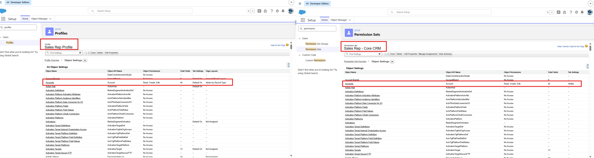
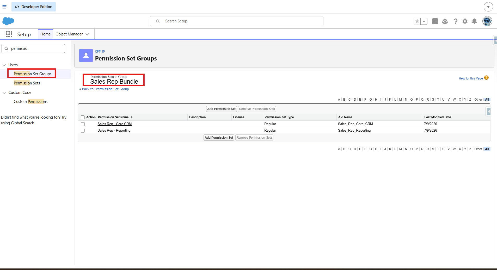
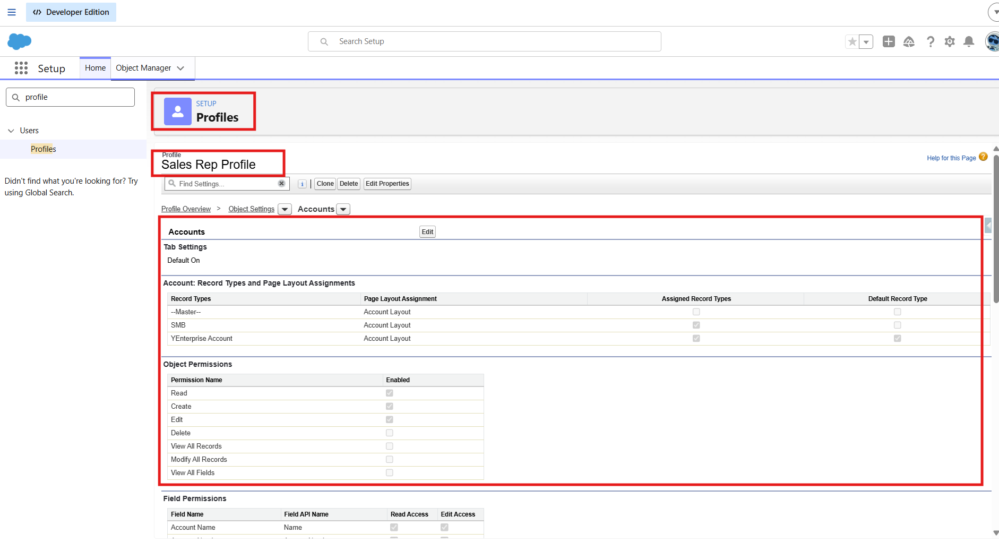
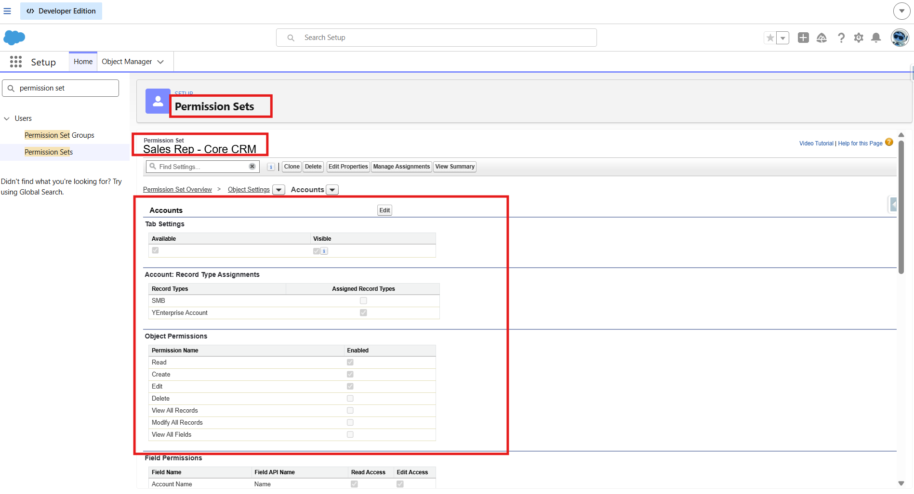
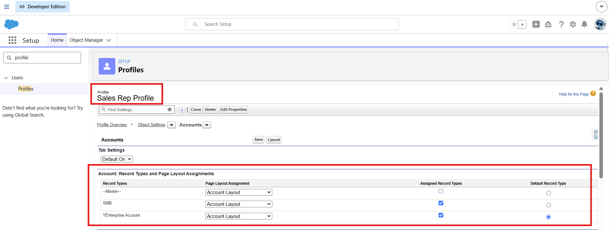
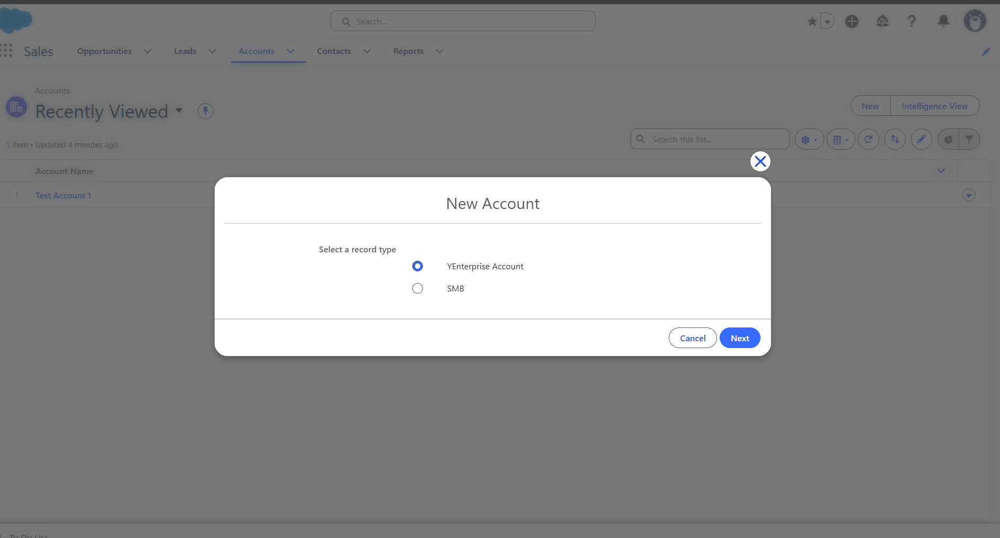

Salesforce recently backtracked on a plan to retire Profiles in favour of Permission Sets and Permission Set Groups. If you'd started migrating access models in anticipation of that deadline, you can exhale — Profiles aren't going anywhere for the foreseeable future.
But here's the thing I keep coming back to: the reversal doesn't make the underlying model worth ignoring. Permission Set Groups are still the direction the platform is heading, they're still the cleaner way to manage access for anyone administering a non-trivial org, and understanding exactly where they succeed and where they still need a Profile underneath them is a genuinely useful thing to know — deadline or no deadline.
So I built the migration anyway, in a dev org, treating it as practice rather than a compliance deadline. This is what I found.
📰 What actually changed
Salesforce announced Profiles would be retired in favour of Permission Sets and Permission Set Groups, then reversed that decision. Profiles remain fully supported with no forced migration deadline. I first read about the reversal on Salesforce Ben — worth a read if you want the full context on the announcement itself.
Why bother, then?
Practice Without a Deadline
No forced deadline doesn't mean no value. Permission Set Groups solve a real problem: Profiles conflate "who a user is" with "what a user can do," and untangling those two concepts is genuinely cleaner architecture. A lot of orgs will migrate voluntarily over the next few years simply because it's better practice — just without Salesforce forcing anyone's hand.
For an admin, that makes this a good moment to build the skill deliberately, in a dev org, without production pressure. So I picked one persona, built the same access model two ways — Profile-first and Permission-Set-first — and compared what actually happened.
The setup
One Persona, Two Models
I used a simple Sales Rep persona — object access to Accounts and Opportunities, a couple of custom tabs, one Record Type. Built it once the old way (a cloned Profile carrying everything), then rebuilt the same access using a Permission Set Group bundling several individual Permission Sets — one for object/field access, one for tab visibility, one for app access.

The same Sales Rep access, built two ways — Profile-first (left) vs. Permission-Set-first (right)

The "Sales Rep Bundle" Permission Set Group — three component Permission Sets combined into one assignable unit
The good news first
What Transfers Cleanly
Most of what a Profile does, a Permission Set does just as well — sometimes better, because it's additive and composable rather than monolithic.
- Object and field-level permissions — CRUD access on Accounts and Opportunities, field-level security, all replicate exactly through Permission Sets. No surprises here.
- App visibility — which Lightning apps a user can see and access maps directly onto Permission Sets.
- Tab settings — with a nuance worth knowing — Permission Sets distinguish between Available and Visible in a way Profiles historically blur. Worth understanding the distinction directly rather than assuming behavioural parity.

Object Settings on the Permission Set — full CRUD parity with the original Profile

Tab Settings — Available vs. Visible is a real distinction, not just semantics
Where it gets interesting
Two Things That Always Need a Profile
This is the part worth actually remembering. Two pieces of the access model never moved to Permission Sets — not because Salesforce hasn't gotten around to it, but because they're architecturally tied to Profile in a way that doesn't map onto a composable, additive permission model.
1. Page Layout Assignment
Which page layout a user sees for a given object and Record Type combination is assigned per Profile — full stop. There's no Permission Set equivalent. I proved this the direct way: tried to find a page layout assignment setting anywhere in a Permission Set, and it doesn't exist.
⚠️ Confirmed by testing, not assumption
I didn't just take this on faith — I went looking for the setting and it genuinely isn't there. Page Layout Assignment lives exclusively under Profile in Setup. Any access model that removes Profile from the picture entirely still needs it for this one purpose.

Page Layout Assignment — the grid only exists at the Profile level, with no Permission Set equivalent
2. Record Type Defaults
Same story. Which Record Type is default for a user creating a new record — and which Record Types are even available to pick from — is a Profile-level setting. I tested this directly: a user with a Permission Set granting Record Type access, but no Profile-level default, sees the Record Type picker but has to actively choose every time. No default gets pre-selected.
| Capability | Profile | Permission Set |
|---|---|---|
| Object CRUD permissions | Yes | Yes |
| Field-level security | Yes | Yes |
| App visibility | Yes | Yes |
| Tab settings | Yes | Yes (with Available/Visible nuance) |
| Record Type access (which types are available) | Yes | Yes |
| Record Type default | Yes | No |
| Page Layout Assignment | Yes | No |

Record Type picker — access granted via Permission Set, but no default pre-selected

Same picker after a naming change — confirming the default still traces back to the Profile
💡 The practical implication
Even in a fully Permission-Set-driven access model, Profile doesn't disappear — it shrinks down to exactly two jobs: Page Layout Assignment and Record Type Defaults. Every admin planning a migration (voluntary or otherwise) needs to budget for this, not assume Profile becomes irrelevant.
Before you call it done
A Readiness Checklist
- Object and field-level permissions replicated via Permission Set
- App visibility replicated via Permission Set
- Tab settings replicated — checked Available vs. Visible explicitly, not assumed
- Record Type access granted via Permission Set where needed
- Page Layout Assignment confirmed still working via a minimal Profile
- Record Type default confirmed still working via a minimal Profile
- Tested as the actual user, not just reviewed as admin
- Validated independently with Salesforce's own tooling (see below)
Don't just trust your own build
Validating With Salesforce's Own Tooling
Once I'd built the Permission-Set-first model by hand, I wanted a second, independent check — not just my own read of what transferred. Salesforce publishes a free tool for exactly this: the User Access and Permissions Assistant, an AppExchange app with a Converter that auto-generates a Permission Set from an existing Profile, so you can compare its output against your manual build.
Getting it installed involves a genuine chunk of OAuth setup — a Connected App, an Authentication Provider, a Named Credential — and there's a specific propagation-delay error that stops most people on the first attempt. I documented the full install separately, since it's substantial enough to deserve its own walkthrough.
The companion piece
Every setup step for the User Access and Permissions Assistant, in order — including the OAuth callback URL error that looks like a configuration mistake but is actually just a 10-minute propagation delay.
While we're on platform changes
The Next Deadline Is Real: MFA
Worth flagging while this is fresh: unlike Profile retirement, Multi-Factor Authentication enforcement is not being reversed. If your org — or a client org you administer — hasn't already enforced MFA for every user on every login, that's the platform change actually worth prioritising right now. It's a genuinely different situation from the Profile reversal: one deadline evaporated, the other is live and enforced.
💡 Don't let one reversal create false confidence
It's tempting to read "Salesforce backtracked on Profile retirement" as "platform deadlines aren't real." MFA enforcement is the counter-example. Two different platform changes, two different outcomes — worth tracking each on its own merits rather than by pattern-matching to the other.
Summary of Findings
Distilled down to what actually matters if you're evaluating this for your own org:
- Object/field permissions, app visibility, and tab settings all transfer cleanly to Permission Sets
- Tab settings have a real Available-vs-Visible distinction worth understanding explicitly
- Page Layout Assignment has no Permission Set equivalent — confirmed by testing, not documentation alone
- Record Type defaults (not access — defaults specifically) also stay Profile-only
- A minimal Profile is still required in any Permission-Set-first model, for exactly these two jobs
- Salesforce's own free Converter tool is a genuinely useful second validation pass
- The Profile retirement reversed — MFA enforcement did not
None of this required the retirement deadline to be worth knowing. If anything, building it without deadline pressure was the better way to actually understand where the model's edges are — rather than rushing a migration against a clock that, as it turned out, didn't end up mattering.